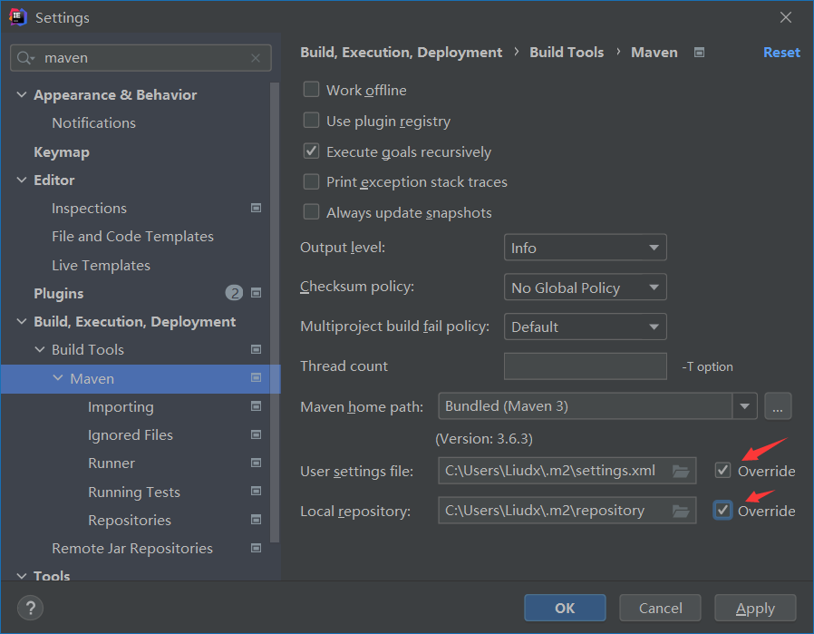
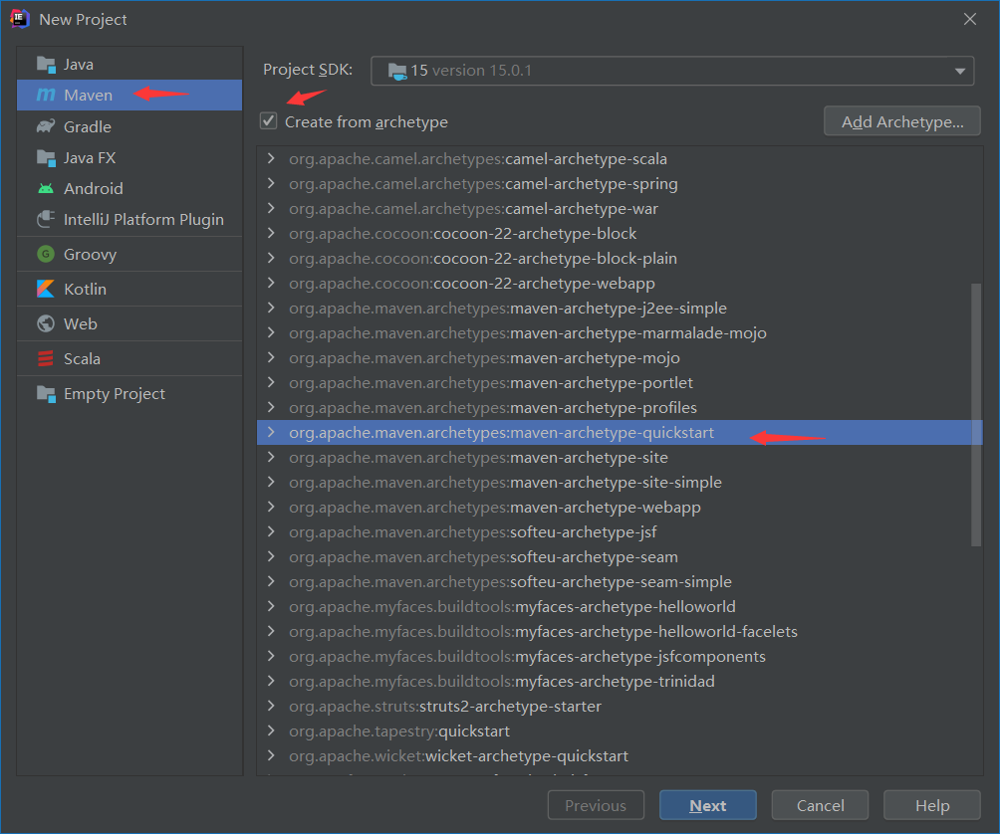

IDEA里使用 maven搭建一个spring工程
IDEA里使用 maven
1.1 修改maven国内源
正常安装完IDEA后，maven是自动安装的，由于官方的源比较慢，需要先修改为国内的源(也可使用Maven 仓库 | 菜鸟教程 (runoob.com)的方法)
-
复制文件
C:\Program Files\JetBrains\IntelliJ IDEA Educational Edition 2021.1\plugins\maven\lib\maven3\conf\settings.xml到C:\Users\<当前用户名>\.m2\settings.xml -
打开新的settings.xml，找到mirrors节点，插入下面的代码（这里是阿里的源，其他国内源可自行baidu），保存
<mirror> <id>alimaven</id> <name>aliyun maven</name> <url>http://maven.aliyun.com/nexus/content/groups/public/</url> <mirrorOf>central</mirrorOf> </mirror> -
打开IDEA.修改设置如图,注意那个setting.xml路径就是2的路径，最下面的文件夹是maven用于保存的本地包的位置：

2 IDEA中使用maven
新手可参考Maven 教程 | 菜鸟教程 (runoob.com)了解maven, 如果你使用过Python的 pip或者node的npm，maven就是java类似对应的工具。不过一般直接用IDEA的插件就可以省去使用maven命令行的麻烦。
-
新建一个maven-demo工程：

-
完成后在工程根目录下有一个pom.xml文件，这个是POM( Project Object Model，项目对象模型 ) 是 Maven 工程的基本工作单元，是一个XML文件，包含了项目的基本信息，用于描述项目如何构建，声明项目依赖，等等。参考Maven POM | 菜鸟教程 (runoob.com)
-
当我们修改了
pom.xml时，如下面新增了junit 4.11的依赖
<?xml version="1.0" encoding="UTF-8"?>
<project xmlns="http://maven.apache.org/POM/4.0.0"
xmlns:xsi="http://www.w3.org/2001/XMLSchema-instance"
xsi:schemaLocation="http://maven.apache.org/POM/4.0.0 http://maven.apache.org/xsd/maven-4.0.0.xsd">
<modelVersion>4.0.0</modelVersion>
<groupId>org.example</groupId>
<artifactId>MavenDemo</artifactId>
<version>1.0-SNAPSHOT</version>
<properties>
<maven.compiler.source>15</maven.compiler.source>
<maven.compiler.target>15</maven.compiler.target>
</properties>
<!-- ~以下为新增代码~ -->
<repositories>
<repository>
<id>alimaven</id>
<name>aliyun maven</name>
<url>http://maven.aliyun.com/nexus/content/groups/public/</url>
<releases>
<enabled>true</enabled>
</releases>
<snapshots>
<enabled>false</enabled>
</snapshots>
</repository>
</repositories>
<dependencies>
<dependency>
<groupId>junit</groupId>
<artifactId>junit</artifactId>
<version>4.11</version>
<scope>test</scope>
</dependency>
</dependencies>
</project>
...
点击Maven 插件窗口的那个刷新同步Maven依赖，我们引入的包就会自动下载到C:\Users\Liudx\.m2\repository\junit,我们后面就能愉快的编写代码了！:smile:
3 Start spring [^](Spring Boot(一)：入门篇 - 纯洁的微笑 - 博客园 (cnblogs.com))
方法一：访问Spring Initializr配置下载初始脚手架工程，添加代码，注意IDEA的编译运行会报错，需要使用Maven 插件来编译后运行！此方法适用于工程项目
方法二：手动己建立基于Maven的空项目。POM.xml添加spring常用的POM依赖；此方法用于探索spring底层实现
<?xml version="1.0" encoding="UTF-8"?>
<project xmlns="http://maven.apache.org/POM/4.0.0" xmlns:xsi="http://www.w3.org/2001/XMLSchema-instance"
xsi:schemaLocation="http://maven.apache.org/POM/4.0.0 https://maven.apache.org/xsd/maven-4.0.0.xsd">
<modelVersion>4.0.0</modelVersion>
<parent>
<groupId>org.springframework.boot</groupId>
<artifactId>spring-boot-starter-parent</artifactId>
<version>2.5.3</version>
<relativePath/> <!-- lookup parent from repository -->
</parent>
<groupId>com.example</groupId>
<artifactId>spring-basic</artifactId>
<version>0.0.1-SNAPSHOT</version>
<name>spring-basic</name>
<description>Demo project for Spring Boot</description>
<properties>
<java.version>15</java.version>
<org.springframework.version>5.2.0.RELEASE</org.springframework.version>
<commons-logging.version>1.2</commons-logging.version>
<junit.version>4.11</junit.version>
</properties>
<dependencies>
<!-- Spring核心依赖 -->
<dependency>
<groupId>org.springframework</groupId>
<artifactId>spring-core</artifactId>
<version>${org.springframework.version}</version>
</dependency>
<!-- Spring beans包-->
<dependency>
<groupId>org.springframework</groupId>
<artifactId>spring-beans</artifactId>
<version>${org.springframework.version}</version>
</dependency>
<!-- Spring 容器包 -->
<dependency>
<groupId>org.springframework</groupId>
<artifactId>spring-context</artifactId>
<version>${org.springframework.version}</version>
</dependency>
<!-- Spring容器依赖包,将第三方库整合进Spring应用上下文,提供支持 -->
<dependency>
<groupId>org.springframework</groupId>
<artifactId>spring-context-support</artifactId>
<version>${org.springframework.version}</version>
</dependency>
<!-- Spring aop依赖 -->
<dependency>
<groupId>org.springframework</groupId>
<artifactId>spring-aop</artifactId>
<version>${org.springframework.version}</version>
</dependency>
<!-- Spring aspects依赖 -->
<dependency>
<groupId>org.springframework</groupId>
<artifactId>spring-aspects</artifactId>
<version>${org.springframework.version}</version>
</dependency>
<!-- aspectj依赖 -->
<dependency>
<groupId>org.aspectj</groupId>
<artifactId>aspectjrt</artifactId>
<version>1.9.4</version>
</dependency>
<!-- commons-logging依赖 -->
<dependency>
<groupId>commons-logging</groupId>
<artifactId>commons-logging</artifactId>
<version>${commons-logging.version}</version>
</dependency>
<!-- Spring jdbc依赖 -->
<dependency>
<groupId>org.springframework</groupId>
<artifactId>spring-jdbc</artifactId>
<version>${org.springframework.version}</version>
</dependency>
<!--Spring事物依赖 -->
<dependency>
<groupId>org.springframework</groupId>
<artifactId>spring-tx</artifactId>
<version>${org.springframework.version}</version>
</dependency>
<!-- Spring web依赖 -->
<dependency>
<groupId>org.springframework</groupId>
<artifactId>spring-web</artifactId>
<version>${org.springframework.version}</version>
</dependency>
<!--Spring webmvc依赖 -->
<dependency>
<groupId>org.springframework</groupId>
<artifactId>spring-webmvc</artifactId>
<version>${org.springframework.version}</version>
</dependency>
<!-- Spring test依赖 -->
<dependency>
<groupId>org.springframework</groupId>
<artifactId>spring-test</artifactId>
<version>${org.springframework.version}</version>
</dependency>
<!-- junit 单元测试依赖 -->
<dependency>
<groupId>junit</groupId>
<artifactId>junit</artifactId>
<version>${junit.version}</version>
<scope>test</scope>
</dependency>
</dependencies>
</project>